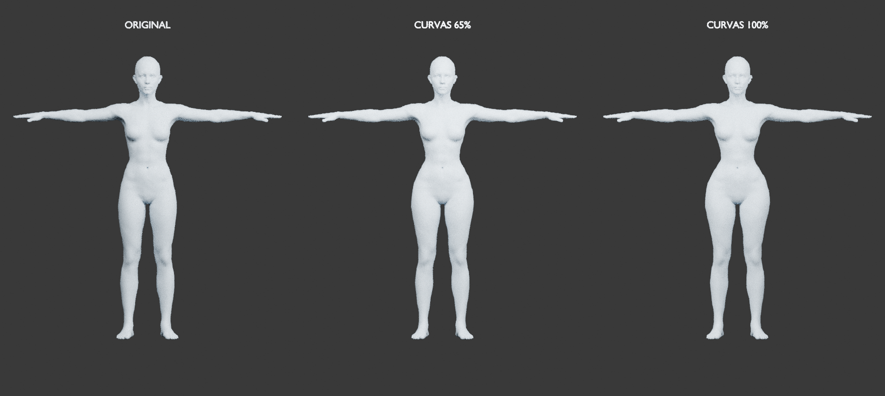

Curvas com proporções mais naturais
Comparação do femele.glb original com o ajuste revisado em 65% e 100%. A cintura foi suavizada e a transição dos glúteos para as coxas ficou mais gradual.

16 vistas: uma volta completa a cada 30°, mais frente e costas com inclinação de ±20°. Clique na imagem para ampliar. A escala e o enquadramento são fixos entre as intensidades.
68 testes passaram. A auditoria examinou sete intensidades em três poses. Nenhum novo cruzamento detectado nas verificações de 0%, 35%, 65% e 100% em repouso; a base já apresenta 65 pares de triângulos cruzados fora do tronco/quadril. Método, resultados e limitações · Medições